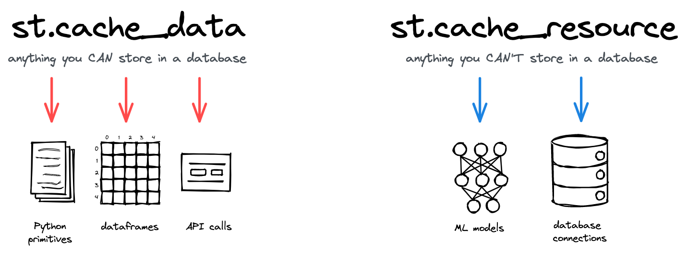

üíª Streamlit
Le framework qui cartonne
Buk, Guig's, le H et le Coc's
21/03/2024
Présentation
Un framework python récent, lancé en 2019.
Et avant Streamlit, qu’est ce qu’il y avait ?
Flask \(\Rightarrow\) Prise en main très complexe, plus adaptée pour les Software Engineers.
Plotly Dash \(\Rightarrow\) Prise en main plus simple que Flask, concept assez similaire à Shiny avec séparation des composants
UIetserver.
Pourquoi Streamlit ?
Objectif : Simplifier au maximum le développement d’applications Data.
User Interface ?
Inputs ?
Outputs ?
Interactions ?
Callbacks ?
Et pourquoi pas juste un script ?
Installation
Prise en main
\(\Rightarrow\) Lançons la démo pour voir de quoi Streamlit est capable.
Un premier jet !
app.py
import streamlit as st
st.set_page_config(page_icon="üêç", page_title="PyApp")
st.title("üòé Ma premi√®re app super styl√©e")
st.markdown("Du *markdown* dans l'app ? **Rien de plus simple !**")
st.markdown("- Lien vers [`streamlit`](https://streamlit.io/)")
st.markdown(
"""
> Des couleurs ? :orange[orange], :red[rouge], :green[vert]
"""
)
st.code(
"""
[[i for i in range(5)] for j in range(2)]
# Du code non-exécutable
""",
language="python"
)
st.divider()üöÄ et pour lancer l‚Äôappli :
Ce qu’on a vu jusqu’ici
st.set_page_config()pour configurer le favicon et le titre de l’onglet dans le navigateurst.title()pour donner un titre à notre appst.markdown()pour ajouter du texte avec différents types de formattage : italique, gras, ajout de liens, etc.st.code()pour inclure du code non-exécutable provenant de différents langages :python,SQL,CSS, etc.st.divider()pour tracer une ligne horizontale
Intégration de LaTeX
Identité D’Euler
\[ e^{i \pi} + 1 = 0 \]
Ajoutons ces quelques lignes de code.
Présentation de widgets
Testons quelques widgets !
st.selectbox()st.button()
Options de layout
st.columns()\(\Rightarrow\) Colonnesst.container()\(\Rightarrow\) Conteneurst.expander()\(\Rightarrow\) Expandeurst.tabs()\(\Rightarrow\) Tabsst.sidebar()\(\Rightarrow\) Sidebarst.popover()\(\Rightarrow\) Popover
Colonnes
colonne_1, colonne_2 = st.columns(2)
Explication visuelle par Donald J. Trump
Sidebar
On va changer notre interface utilisateur pour ajouter une Sidebar et regrouper nos widgets.
with st.sidebar:
prenom = st.text_input("ü§† Ecris ton pr√©nom *cow-boy* !")
reussite = st.checkbox("Tu penses avoir ton année ?")
note_pf = st.number_input(
"Ta note en Concurrence et Innovation",
min_value=0,
max_value=5,
step=1
)
epanouissement = st.select_slider(
"Ton épanouissement en master",
range(11)
)Tabs
On va ajouter quelques onglets (Tabs) à notre application pour diversifier l’interface.
Des messages de statut
- ℹ️
st.info() - ❌
st.error()
- ⚠️
st.warning() - ✅
st.success()
with st.sidebar:
with st.expander("On regarde quelques messages ?"):
st.info(
f"Ton épanouissement en master : {epanouissement}/10",
icon="ü뮂Äçüè´"
)
st.error(
f"Ta note en Concurrence et Innovation : {note_pf}",
icon="üëÄ"
)
st.warning("Ceci est un avertissement générique", icon="⚠")
st.success("Message de réussite.", icon="✅")Et avec des vraies données ? (I)
On a vu tout un tas d’éléments d’
UI, mais on a pas vraiment interragi avec des données dignes de ce nom.
\(\Rightarrow\) Morale de l’histoire : Installe polars
Et avec des vraies données ? (II)
Exemple avec des données de cas de COVID-19 aux Etats-Unis entre 2020 et 2022 : + 2.5 millions de lignes !
import polars as pl
df_covid = pl.read_csv(
"https://raw.githubusercontent.com/nytimes/covid-19-data/master/us-counties.csv"
)Problèmes
- L’import met trois ans
- En plus, chaque action dans l’appli relance l’import…
On est pas rendus…
Solution (I)
Deux décorateurs très utiles :
@st.cache_data et @st.cache_resource
Solution (II)
@st.cache_data
def import_covid_usa(link: str) -> pl.DataFrame:
"""Fonction d'import des données optimisée."""
return pl.read_csv(link)üí° Et maintenant, observons la diff√©rence !
df_covid = import_covid_usa(
"https://raw.githubusercontent.com/nytimes/covid-19-data/master/us-counties.csv"
)Note
On attend une seule fois pour l’import des données, ce qui est beaucoup plus satisfaisant pour l’utilisateur.
- Solution la plus optimale ici : base de données
Affichage d’un tableau
On a maintenant envie d’afficher nos données sous forme de tableau.
with tab_2:
st.dataframe(
df_covid,
hide_index=True,
use_container_width=True,
column_config={
"date": st.column_config.DateColumn("üìÖ Date", format="DD/MM/YYYY")
},
)\(\Rightarrow\) Grande flexibilité dans l’affichage.
üìä Et pour les graphiques ?
On va chercher √† visualiser le nombre de morts par √©tat √† une certaine date (un peu macabre üò∑).
with tab_3:
st.subheader("Nombre de personnes mortes de COVID-19 *(Noël 2020)*")
deaths_by_state_christmas = (
df_covid.filter(pl.col("date") == "2020-12-25")
.group_by("state")
.agg(pl.col("deaths").sum())
)
st.bar_chart(deaths_by_state_christmas, x="state", y="deaths")De nombreuses options de visualisation à la volée :
st.line_chart()st.scatter_chart()st.map()- etc.
DeltaGenerator
Mais comment tout ça marche ?
Au coeur de tous ces composants permettant de créer l’interface utilisateur, il y a une classe : le DeltaGenerator.
- Système basé sur protobuf, crée par GOOGLE
Pour aller + loin
Secrets management
st.secrets
Exemples d’appli complètes
- üç∑ Projet de Machine Learning du
Coc's& duGuig's: Wine Scraping - üöó Projet de Machine Learning de
Buk& duH: EstimyCar
API Reference : https://docs.streamlit.io/library/api-reference
FIN
(Un dernier meme pour la route)

Présentation de Streamlit